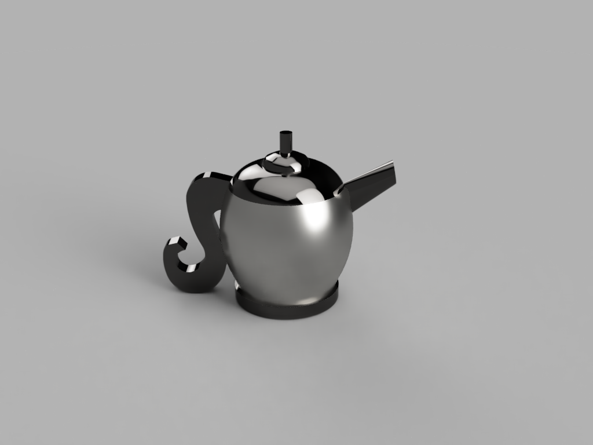
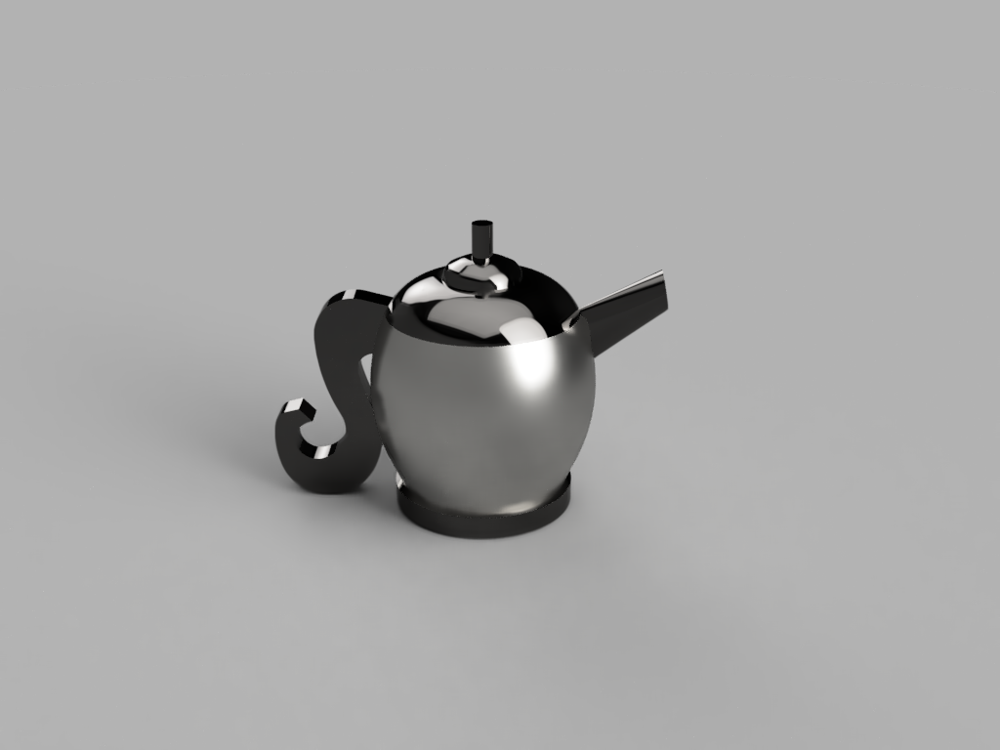

The Model, Artifact, and Speculative Object
Phase 01 - Tempest in a Teapot
Teapot 01
Shareable linkTeapot 02
Shareable link 


Phase 02 - Find and Print a Thingiverse Artifact


Click here to be directed to the Thingiverse page.
Phase 03 & 04 - Rough Image of Artifact
Explanation
I wanted to use an existing object, the hourglass, and the idea of time to tell a story of how fate came to be. I have read many articles discussing the idea of immortality. Some people go to such extent to live forever, such as drinking the blood of young people, freezing themselves, and more. I thought it would be an interesting to tie it together with a myth.
After further discussion and feedback, I decided to completely change my idea.
Final - Backstory, Fusion Model Renders
Click here to download my object from the Fusion360 cloud.
Backstory
In a time where advanced technology has reached its peak, scientists have discovered a way to preserve DNA within a micro glass vessel. Any form of DNA, whether it be tissue, hair follicles, or brain cells, can be cryogenically sealed within this vessel. The vessel itself can reach temperatures of negative 238 degrees Fahrenheit. This vessel is worn around the neck at all times. If a human experiences death, the vessel is left behind. Scientists then use the vessel to clone the deceased, so that they can continue to live on, embodying a new form of life. This important artifact, discusses the technological optimism left by humans as society continues to grow into an even more advanced species.
<